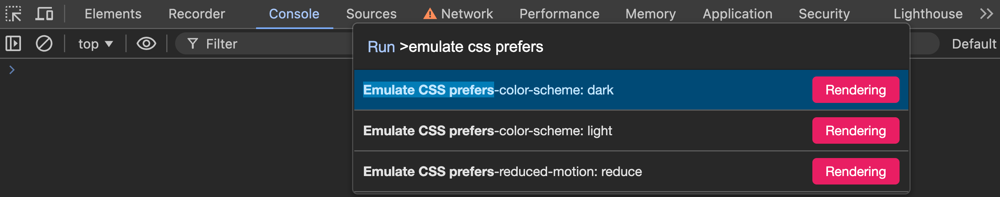
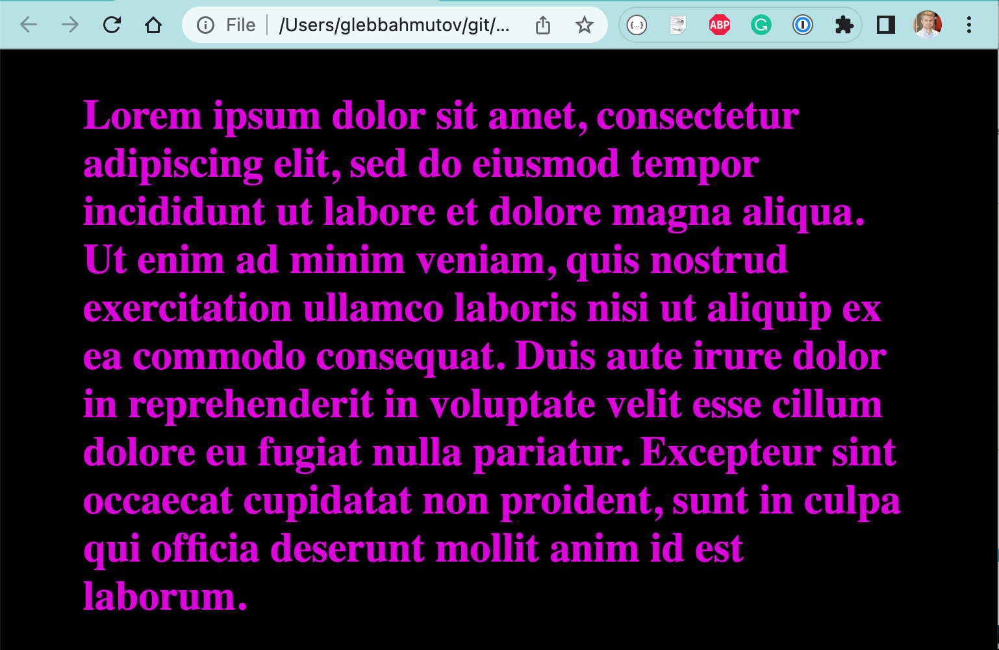
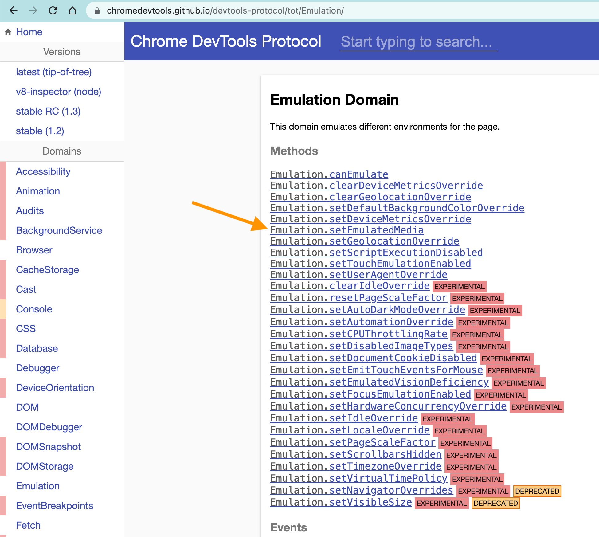
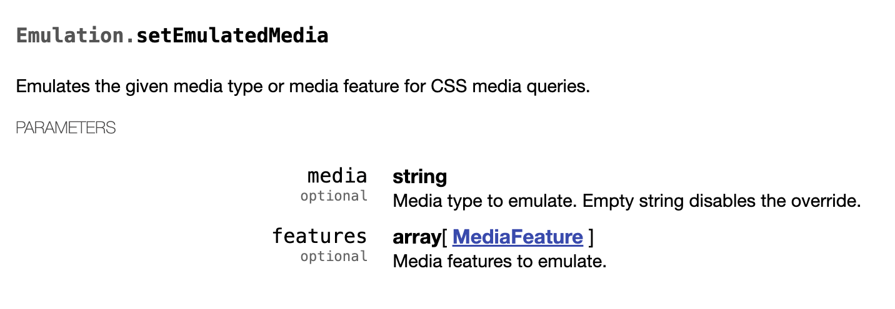
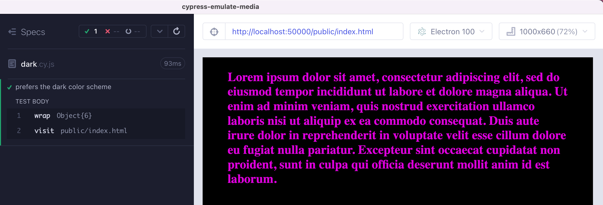
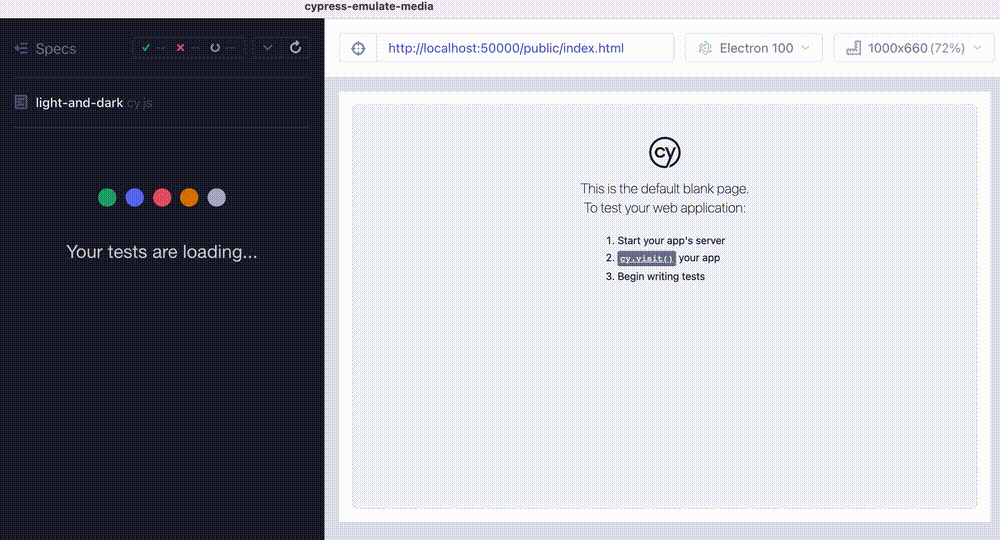

How to set the "prefers-color-scheme" value in a Cypress test.
The application
Let's say our application has different styles depending on the media and the user's current prefers-color-scheme setting. In my example, the HTML page is normally uses the black text on the white background. If the user has prefers-color-scheme: dark setting, the page uses cyan on black colors to show the text.
The simplest way to see how the page looks with the prefers-color-scheme: dark is to open the browser DevTools (I am using Chrome), and run the command "Emulate CSS prefers-color-scheme ..."

The page switches to use its dark media CSS styles

How do we control the CSS media from a Cypress test?
DevTools automation
Cypress has a built-in DevTools automation channel as I described in the Cypress Automation blog post. If you know that it is possible to execute a command from the DevTools, then you can find the actual command using the Chrome Debugger Protocol site. I have found the Emulation commands that has what we need.


Let's use it in our test
cypress/e2e/dark.cy.js
1 2 3 4 5 6 7 8 9 10 11 12 13 14 15 16 17 18
it('prefers the dark color scheme', () => { cy.wrap( Cypress.automation('remote:debugger:protocol', { command: 'Emulation.setEmulatedMedia', params: { media: 'page', features: [ { name: 'prefers-color-scheme', value: 'dark', }, ], }, }), )
cy.visit('public/index.html') })
Success!

Tip: I use cy.wrap(...) around the Promise-returning Cypress.automation call to make all other Cypress commands like cy.visit wait until the Emulation.setEmulatedMedia command has finished. See my cy.wrap examples.
Confirm the applied CSS
Let's make sure the actual dark background color is used by the page. We can grab the DOM element and ask the window object to give us the computed CSS property.
The .then(($el) => window.getComputedStyle($el[0]).backgroundColor) code is a little unwieldy. Let's make a utility function to get us the computed style by name.
cypress/e2e/utils.js
1 2 3 4
// use Lodash _.camelCase to support both "backgroundColor" and "background-color" const { camelCase } = Cypress._ exportconstgetComputedProperty = (property) => ($el) => window.getComputedStyle($el[0])[camelCase(property)]
Once you change the page media preferences, it stays that way. The Cypress Time-Traveling Debugger does NOT restore the media preferences when you hover over the command DOM snapshots. Thus if you have different tests in the same spec file, or switch the media preferences in the same test, it will not show the correct CSS styles when you inspect the commands.
The test passes. But when I hover over the commands, the page CSS Media preference is not restored, and thus I see the last dark color them CSS.

So just watch out for that.
Use cypress-cdp
You can simply Cypress automation commands and avoid the extra cy.wrap and cy.then(() => Cypress.automation(...)) code by using my plugin cypress-cdp. I will show how to use cy.CDP to emulate the color theme preference in my Cypress Plugins course.
Bonus 1: Emulate coarse pointer for touch devices
Imagine we are trying to design a responsive web app that works well on touch devices like phones and tablets. We might use the pointer CSS media query to vary the size of the elements for the user to press. Using a mouse? The checkbox can be normal. Using a finger? The resolution is coarse and the checkbox should be drawn larger.
1 2 3 4 5 6 7 8 9 10 11 12 13 14 15 16 17 18
/* Pointer is a fine pointer, such as a mouse */ @media (pointer: fine) { input[type='checkbox'] { width: 15px; height: 15px; border-width: 1px; border-color: blue; } } /* Something like a finger is a coarse input */ @media (pointer: coarse) { input[type='checkbox'] { width: 30px; height: 30px; border-width: 2px; border-color: red; } }
If we open this page in the browser, we can see the difference by emulating the mobile device using the DevTools
Because Cypress does not reset the touch media emulation (or any other media emulations) before each test, we must do it ourselves. Let's add test tags and use a global beforeEach hook to set the media to avoid doing it for every test. Normally, we would place this beforeEach hook in the E2E support file. But for this demo, I will simply have it in the spec file itself.
// typically this hook could be placed in the e2e/support.js file // and apply to _all_ tests across all specs beforeEach(() => { // get the tags from the current test config using // the Cypress implementation details const tags = cy.state('test')?._testConfig?.unverifiedTestConfig?.tags // tags could be a single string or an array of strings if (tags?.includes('@touch')) { cy.CDP('Emulation.setTouchEmulationEnabled', { enabled: true, maxTouchPoints: 1, }) } else { cy.CDP('Emulation.setTouchEmulationEnabled', { enabled: false, }) } })